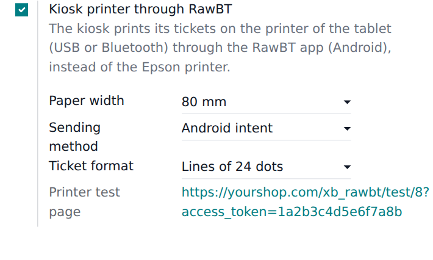
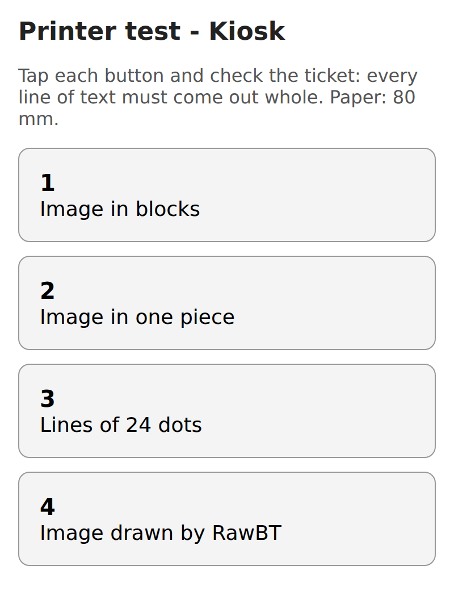

Many Android kiosks come with a receipt printer built in, connected by USB. Odoo's Self-Order Kiosk can only print on Epson ePOS network printers, so that printer sits unused and the tickets go to a printer at the counter, far from the customer.


rawbt: link) for the browsers and kiosk apps that block one of them.Odoo 19 Community or Enterprise · Point of Sale with Self-Order Kiosk · an Android kiosk tablet with the RawBT app (by 402d, sold separately in Google Play).
With Self-Order Kiosk - Quotation (XUBAX), the free add-on Self-Order Kiosk Quotation - RawBT installs by itself and tells the customer the ticket comes out of the kiosk.
Questions? Write to soporte@xubax.com — XUBAX.